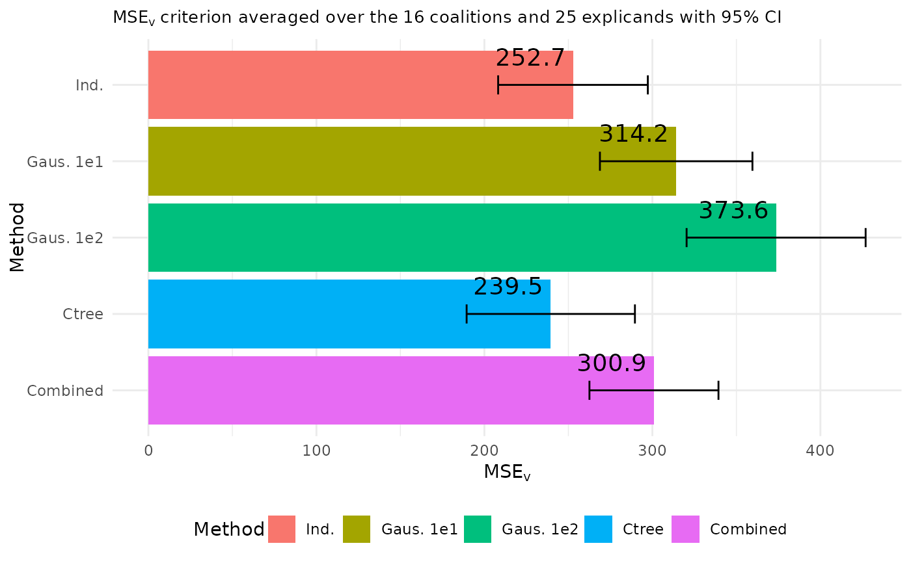

Make plots to visualize and compare the MSEv evaluation criterion for a list of
explain() objects applied to the same data and model. The function creates
bar plots and line plots with points to illustrate the overall MSEv evaluation
criterion, but also for each observation/explicand and combination by only averaging over
the combinations and observations/explicands, respectively.
plot_MSEv_eval_crit(
explanation_list,
index_x_explain = NULL,
id_combination = NULL,
CI_level = if (length(explanation_list[[1]]$pred_explain) < 20) NULL else 0.95,
geom_col_width = 0.9,
plot_type = "overall"
)A list of explain() objects applied to the same data and model.
If the entries in the list are named, then the function use these names. Otherwise, they default to
the approach names (with integer suffix for duplicates) for the explanation objects in explanation_list.
Integer vector.
Which of the test observations to plot. E.g. if you have
explained 10 observations using explain(), you can generate a plot for the first 5
observations by setting index_x_explain = 1:5.
Integer vector. Which of the combinations (coalitions) to plot.
E.g. if you used n_combinations = 16 in explain(), you can generate a plot for the
first 5 combinations and the 10th by setting id_combination = c(1:5, 10).
Positive numeric between zero and one. Default is 0.95 if the number of observations to explain is
larger than 20, otherwise CI_level = NULL, which removes the confidence intervals. The level of the approximate
confidence intervals for the overall MSEv and the MSEv_combination. The confidence intervals are based on that
the MSEv scores are means over the observations/explicands, and that means are approximation normal. Since the
standard deviations are estimated, we use the quantile t from the T distribution with N_explicands - 1 degrees of
freedom corresponding to the provided level. Here, N_explicands is the number of observations/explicands.
MSEv ± tSD(MSEv)/sqrt(N_explicands). Note that the explain() function already scales the standard deviation by
sqrt(N_explicands), thus, the CI are MSEv ± tMSEv_sd, where the values MSEv and MSEv_sd are extracted from the
MSEv data.tables in the objects in the explanation_list.
Numeric. Bar width. By default, set to 90% of the ggplot2::resolution() of the data.
Character vector. The possible options are "overall" (default), "comb", and "explicand".
If plot_type = "overall", then the plot (one bar plot) associated with the overall MSEv evaluation criterion
for each method is created, i.e., when averaging over both the combinations/coalitions and observations/explicands.
If plot_type = "comb", then the plots (one line plot and one bar plot) associated with the MSEv evaluation
criterion for each combination/coalition are created, i.e., when we only average over the observations/explicands.
If plot_type = "explicand", then the plots (one line plot and one bar plot) associated with the MSEv evaluation
criterion for each observations/explicands are created, i.e., when we only average over the combinations/coalitions.
If plot_type is a vector of one or several of "overall", "comb", and "explicand", then the associated plots are
created.
Either a single ggplot2::ggplot() object of the MSEv criterion when plot_type = "overall", or a list
of ggplot2::ggplot() objects based on the plot_type parameter.
# Load necessary librarieslibrary(xgboost)
library(data.table)
library(shapr)
library(ggplot2)
# Get the data
data("airquality")
data <- data.table::as.data.table(airquality)
data <- data[complete.cases(data), ]
#' Define the features and the response
x_var <- c("Solar.R", "Wind", "Temp", "Month")
y_var <- "Ozone"
# Split data into test and training data set
ind_x_explain <- 1:25
x_train <- data[-ind_x_explain, ..x_var]
y_train <- data[-ind_x_explain, get(y_var)]
x_explain <- data[ind_x_explain, ..x_var]
# Fitting a basic xgboost model to the training data
model <- xgboost::xgboost(
data = as.matrix(x_train),
label = y_train,
nround = 20,
verbose = FALSE
)
# Specifying the phi_0, i.e. the expected prediction without any features
prediction_zero <- mean(y_train)
# Independence approach
explanation_independence <- explain(
model = model,
x_explain = x_explain,
x_train = x_train,
approach = "independence",
prediction_zero = prediction_zero,
n_samples = 1e2
)
#> Note: Feature classes extracted from the model contains NA.
#> Assuming feature classes from the data are correct.
#> Setting parameter 'n_batches' to 2 as a fair trade-off between memory consumption and computation time.
#> Reducing 'n_batches' typically reduces the computation time at the cost of increased memory consumption.
# Gaussian 1e1 approach
explanation_gaussian_1e1 <- explain(
model = model,
x_explain = x_explain,
x_train = x_train,
approach = "gaussian",
prediction_zero = prediction_zero,
n_samples = 1e1
)
#> Note: Feature classes extracted from the model contains NA.
#> Assuming feature classes from the data are correct.
#> Setting parameter 'n_batches' to 10 as a fair trade-off between memory consumption and computation time.
#> Reducing 'n_batches' typically reduces the computation time at the cost of increased memory consumption.
# Gaussian 1e2 approach
explanation_gaussian_1e2 <- explain(
model = model,
x_explain = x_explain,
x_train = x_train,
approach = "gaussian",
prediction_zero = prediction_zero,
n_samples = 1e2
)
#> Note: Feature classes extracted from the model contains NA.
#> Assuming feature classes from the data are correct.
#> Setting parameter 'n_batches' to 10 as a fair trade-off between memory consumption and computation time.
#> Reducing 'n_batches' typically reduces the computation time at the cost of increased memory consumption.
# ctree approach
explanation_ctree <- explain(
model = model,
x_explain = x_explain,
x_train = x_train,
approach = "ctree",
prediction_zero = prediction_zero,
n_samples = 1e2
)
#> Note: Feature classes extracted from the model contains NA.
#> Assuming feature classes from the data are correct.
#> Setting parameter 'n_batches' to 10 as a fair trade-off between memory consumption and computation time.
#> Reducing 'n_batches' typically reduces the computation time at the cost of increased memory consumption.
# Combined approach
explanation_combined <- explain(
model = model,
x_explain = x_explain,
x_train = x_train,
approach = c("gaussian", "independence", "ctree"),
prediction_zero = prediction_zero,
n_samples = 1e2
)
#> Note: Feature classes extracted from the model contains NA.
#> Assuming feature classes from the data are correct.
#> Setting parameter 'n_batches' to 10 as a fair trade-off between memory consumption and computation time.
#> Reducing 'n_batches' typically reduces the computation time at the cost of increased memory consumption.
# Create a list of explanations with names
explanation_list_named <- list(
"Ind." = explanation_independence,
"Gaus. 1e1" = explanation_gaussian_1e1,
"Gaus. 1e2" = explanation_gaussian_1e2,
"Ctree" = explanation_ctree,
"Combined" = explanation_combined
)
if (requireNamespace("ggplot2", quietly = TRUE)) {
# Create the default MSEv plot where we average over both the combinations and observations
# with approximate 95% confidence intervals
plot_MSEv_eval_crit(explanation_list_named, CI_level = 0.95, plot_type = "overall")
# Can also create plots of the MSEv criterion averaged only over the combinations or observations.
MSEv_figures <- plot_MSEv_eval_crit(explanation_list_named,
CI_level = 0.95,
plot_type = c("overall", "comb", "explicand")
)
MSEv_figures$MSEv_bar
MSEv_figures$MSEv_combination_bar
MSEv_figures$MSEv_explicand_bar
# When there are many combinations or observations, then it can be easier to look at line plots
MSEv_figures$MSEv_combination_line_point
MSEv_figures$MSEv_explicand_line_point
# We can specify which observations or combinations to plot
plot_MSEv_eval_crit(explanation_list_named,
plot_type = "explicand",
index_x_explain = c(1, 3:4, 6),
CI_level = 0.95
)$MSEv_explicand_bar
plot_MSEv_eval_crit(explanation_list_named,
plot_type = "comb",
id_combination = c(3, 4, 9, 13:15),
CI_level = 0.95
)$MSEv_combination_bar
# We can alter the figures if other palette schemes or design is wanted
bar_text_n_decimals <- 1
MSEv_figures$MSEv_bar +
ggplot2::scale_x_discrete(limits = rev(levels(MSEv_figures$MSEv_bar$data$Method))) +
ggplot2::coord_flip() +
ggplot2::scale_fill_discrete() + #' Default ggplot2 palette
ggplot2::theme_minimal() + #' This must be set before the other theme call
ggplot2::theme(
plot.title = ggplot2::element_text(size = 10),
legend.position = "bottom"
) +
ggplot2::guides(fill = ggplot2::guide_legend(nrow = 1, ncol = 6)) +
ggplot2::geom_text(
ggplot2::aes(label = sprintf(
paste("%.", sprintf("%d", bar_text_n_decimals), "f", sep = ""),
round(MSEv, bar_text_n_decimals)
)),
vjust = -1.1, # This value must be altered based on the plot dimension
hjust = 1.1, # This value must be altered based on the plot dimension
color = "black",
position = ggplot2::position_dodge(0.9),
size = 5
)
}
